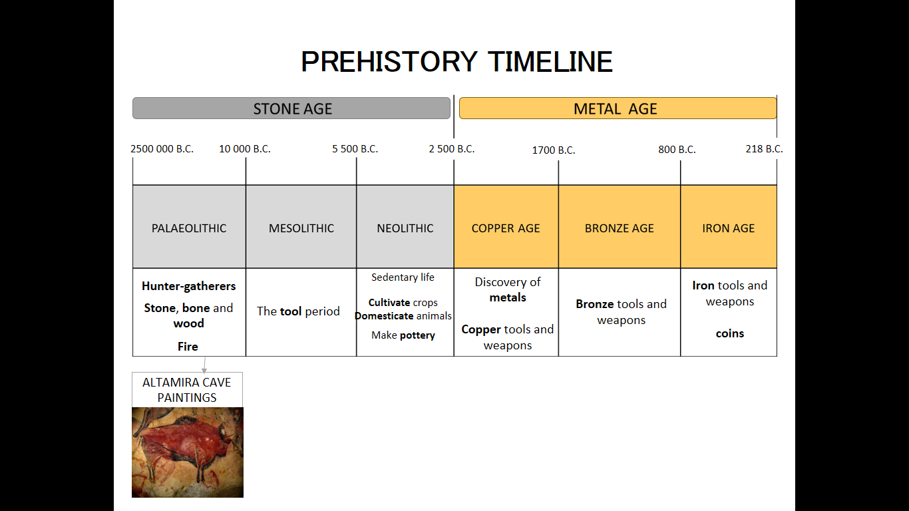
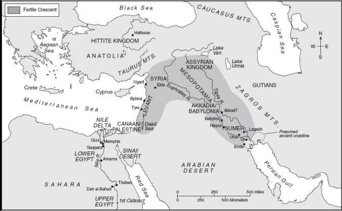
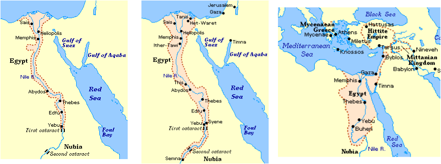
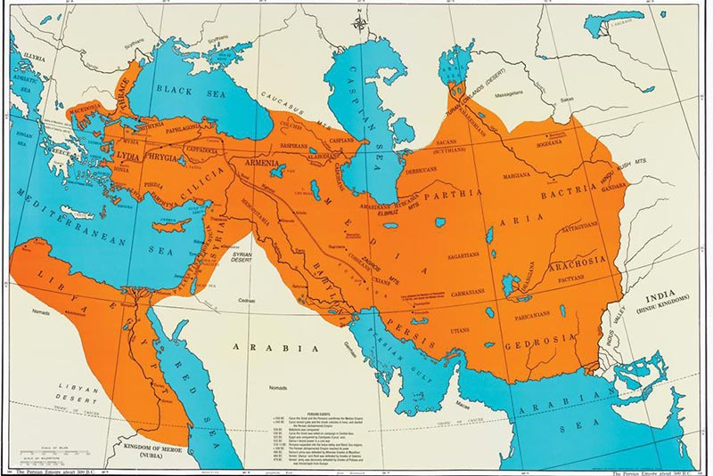

The Paleolithic Age saw humans living in small hunter-gatherer bands. Sustenance was secured through foraging for fruit and the use of fire and simple stone or wood tools. During the Neolithic Revolution, humans learned to domesticate animals, improved stone tools, invented agriculture and began to live in sedentary settlements, giving up the nomadic life of the Paleolithic Age. The Neolithic Age was succeeded by the Bronze Age, where humans made tools of copper and tin. A gendered division of labor emerged, with men hunting and women foraging.
Civilizations require the development of agricultural surplus to produce and sustain their conditions of life. Key accomplishments that assisted in the fulfillment of this necessity include the transition from residing in villages to living in cities and the invention of irrigation. Early civilizations emerged, historically, in river valleys, locations able to facilitate and sustain population growth. Western civilization arose in the fertile crescent, southeast of Anatolia and encompassing the Tigris and Euphrates rivers. Monarchy was the most common political system in early Western civilization.

The Fertile Crescent
Cities first emerged in the Tigris-Euphrates valley, a region known as Mesopotamia. Early Mesopotamian religion was polytheistic, with many gods serving different functions. Fortune in human affairs was thought to be a result of pleasing or displeasing the gods. Myths such as The Epic of Gilgamesh sought to explain the human relationship to the natural environment and the will of the gods. Later civilizations would inherit Mesopotamian myth and religion in the further development of their own traditions.
Writing was invented by the Sumerians to keep track of accounting using a system of symbols called cuneiform. Eventually, writing was used to produce literature and record information, such as mathematics and foreign languages.
- Sumer
Sumer, in the south of Mesopotamia, was composed of small warring cities who fought over control of the water supply. Victors consolidated their territory, leading to increasingly larger settlements, unification being desirable for efficient use of irrigation.
- Akkadians
The Akkadians were Semitic-speaking semi-nomads originating in the deserts west of Mesopotamia. Their king, Sargon, conquered Sumer after settling in the central area of the Tigris-Euphrates valley, unifying the territory under an Empire that came to span not only Mesopotamia, but beyond into the Iranian plateau and Lebanon.
- Third Dynasty of Ur
The Sumerians came to resent Akkadian power and eventually regained rule of Mesopotamia through a dynasty centered in the city of Ur. This lasted for around 100 years, followed by a period of chaos between warring dynasties where no single dynasty claimed total control. By the next period of reunification, the Sumerians no longer retained their group identity.
- Amorites
The Amorites were the next people to unify Mesopotamia. Also known as the Old Babylonian dynasty, they ruled for around 300 years. The Amorite king Hammurabi wrote the most extensive law code dating from Mesopotamia, outlining a rigidly stratified, hierarchical social structure. Slavery, though often temporary, was a major feature of Amorite society.
- Hittites, Kassites
The Old Babylonian empire disintegrated after being assaulted by the Hittites, from the north in Anatolia, and the Kassites, from the East in present-day Iran. The Kassites establied rule for 300 years.
- Assyrians
The Assyrians followed a system of privatized, long-distance trade, establishing themselves as middlemen exchanging wood and metals. Mesopotamia had been dominated by a centralized state monopoly until the introduction of a market-based system by the Assyrians.
Egypt was the first centralized society, ruled by a monarchy. The Egptians possessed their own pictographic script, known as hieroglyphic.

The Old, Middle and New Kingdoms
Around 3050 BCE, Menes unified the Nile valley. By approximately 2687 BCE, this dynasty ruled over a large, centralized state known as the Old Kingdom. The Great Sphinx dates, according to most scholars, to the time of the Old Kingdom.
Surrounded by vast deserts running the length of the Nile on both the Eastern and Western sides, Egypt enjoyed protection from foreign invasion, unlike the city-states of Mesopotamia, which suffered frequent invasion. The Nile flooded predictably, unlike the capricious flooding of the Tigris and Euphrates, much to the Egyptians' advantage. Agriculture was the most valuable economic possession.
Egyptians of the Old Kingdom believed in an afterlife for the royalty, who were divinely appointed to generate maat, a force that brought order to the kingdom. Like Mesopotamian religion, Egyptian religion was polytheistic and good fortune was secured through acting rightly. The pyramids were giant tombs erected as a monument to the rulers' piety and divine status; these structures housed mummified bodies that were believed to preserve them for the afterlife.
The Old Kingdom was highly stratified, though men and women enjoyed a more egalitarian relationship than the surrounding societies.
The Old Kingdom began to weaken around 2200 BCE, the pharoahs unable to remain convincing in their power. This led to civil wars and decentralization of rule in the hands of nobles. This time, lasting until around 2060 BCE, was known as the First Intermediate Period.
Centralization was restored in the period of the Middle Kingdom. This stability lasted until the invasion of a Semitic-speaking people known as the Hyksos, beginning the Second Intermediate Period. Hyksos rulers introduced elements of culture from other Near Eastern states, including war chariots, increasing Egypt's military strength.
The Second Intermediate period came to an end when the Thebians of southern Egypt defeated the Hyksos and reunited the kingdom, ushering in the New Kingdom. During this period, the pharoahs expanded the reach of Egyptian territory into the Levant and Anatolia. Reaching the eastern Mediterranean shoreline, the Egyptians came into contact with the Hittites, beginning a series of wars.
The early pharaohs of the New Kingdom promoted one god, Amun-Re, above other gods, which Akhenaten would take further with the sole worship of his sun god, Aten. Only the ruling monarchs had direct access to Aten. The cult of Aten prefigured the development of monotheism later on.
Three centers of civilization emerged from 2200 BCE to 1000 BCE: that of the Hittites in Anatolia, the Minoans in Crete, and the Myceneans on the Greek mainland.
Like the Egyptians, the Hittites developed a unified, centralized state with authoritarian rule. The Hittites, from the Caucasus in the north, spoke an Indo-European language. They worshipped both Indo-European deities and gods inherited from the conquered Anatolian populations. A warlike people, the Hittites came into conflict with the pharoahs of the New Kingdom and various peoples south of Anatolia in their aggressive, expansionist wars of conquest. The conflict with Egypt led to a a standstill that cuminated in the signing of the first international peace treaty.
The Minioans organized their society into city-states, unlike the Hittites. The Minoans are referred to as such after the Greek myth of King Minos, who is said to have locked his son, a monster called the Minotaur, in a labyrinth of his own construction, as well as commanding the first great navy. The Minoans commanded a powerful navy used to maintain their great maritime empire, financed through trade with the Hittites, Egyptians, and the dominated Aegean peoples. This revenue was used to furnish their civilization with grand and elaborate palaces. The Minoans are also known for the development of Mediterranean polyculture: the simultaneous cultivation of olives, grapes and grains, which greatly contributed to their flourishing.
Like the Minoans, the Myceneans organized their society into city-states. Known as the first Greeks, the Myceneans spoke an Indo-European language and inhabited the Greek mainland. The Myceneans were a warrior culture consumed by conflicts between settlements, which tended to be clustered on the coast due to infertile land and the predominance of useful ports. Closely connected to Minoan civilization, they eventually came to dominate Crete, a fact known by the presence of tablets written in an early Greek script known as Linear B on the island. By the time of Mycenean dominance of Crete, their civilization was constantly at war not only on the mainland, but abroad as well. The epic poem The Iliad may depict historical events from this time.
Political violence and, possibly, climate change substantially weakened every extant state in the region by 1300 BCE. Various seafaring groups known as the Sea Peoples invaded and assaulted civilizations in the region. The Hitties' trade routes were cut off and, likewise, the Egyptians' trade network was destroyed. During the time of the invasions of the Sea Peoples, the Myceneans were consumed with internal conflict, hastening the downfall of their society.
Following the violence of the era spanning from 1200-1000 BCE, the Neo-Assyrian Empire emerged, inspiring the rise of other civilizations in turn.
The Neo-Assyrians were conquerers known for their brutality. First capturing Babylon and then Egypt, the Neo-Assyrians came to rule all of the Near East, albeit only for a brief period. The empire's subjects came to resent the harsh rule of their leaders, and a series of rebellions ensued. One such revolt in the seventh-century significantly weakened the empire. The Neo-Assyrians were defeated by the combined forces of the Medes, an Iranian group, and the Chaldeans, a Semitic people.
Similar in extent to the Neo-Assyrian Empire with the exception of Egypt, the Chaldeans were known for their cultural achievements. The Chaldeans rebuilt Babylon on a much grander scale and made significant contributions to astronomy.
Cyrus the Great founded the Persian Empire in the area of modern-day Iran. Cyrus was a talented diplomat and extended a high degree of religious tolerance to his subjects. By positioning himself as a defender of the God Marduk, he won the support of the Babylonians against their native king, who worshipped a non-traditional deity. The state religion of Persia, Zorastrianism, espoused a monotheism that would have a significant impact on later religions. Another important feature of Zoroastrianism was its dualistic cosmology: the world is the result of a battle between two opposing forces, good and evil.
At its greatest extent, under the rule of Darius I, the Empire spanned from Thrace in the west to India in the east.

The Persian Empire at its greatest extent under Darius I
The Israelites' contribution to Western Civilization was monotheistic religion, which would become the dominant form of religion in the West through the widespread adoption of Christianity among the gentiles. According to the Biblical account, the origin of the Israelite people can be traced back to Egypt at least, and possibly Ur. Abraham, the patriarch from which the Israelites are said to descend, left Ur for Canaan under the inspiration of the god Yahweh. Originally polytheistic, the Israelites came to worship one god above all others. Yahweh is a composite figure likely fusing Aten from the time of Hebrew residence in Egypt, a Sumerian mother goddess figure common to many pagan religions, among other, prior deities.
The Israelites left Canaan for Egypt following Jacob, Abraham's grandson, to escape famine. By the thirteenth century, the Israelites had been forced into slavery. The Biblical book of Exodus tells the story of Moses leading his people out of Egypt into the desert. While in the desert, Moses ascends Mount Sinai to form a covenant with Yahweh, who promises to lead the Israelites to a promised land in exchange for exclusive devotion and adherence to his commandments.
The Israelites then returned to Canaan. The Israelites were divided into twelve tribes, a formation that remained until the emergence of the monarchy in the eleventh century. Saul, the first king of the Israelites, was succeeded by David and Solomon. The Israelites built up a large amount of wealth, which Solomon used to build the extravagant Jerusalem temple. When Solomon died, the monarchy split into two kingdoms, the northern kingdom of Israel and the southern kingdom of Judah. In the eighth century BCE, the Assyrians destroyed Judah and sent the population to Assyria. In the sixth century BCE, the Babylonians captured Judah and destroyed the Jerusalem temple and sent the Israelites into exile in Babylon. Here, the Israelites learned about Zoroastrianism, which influenced their development of monotheism in service of Yahweh.
When Cyrus conquered Babylon in the sixth century BCE, the Israelites were allowed to return to Canaan. After the name "Judah," the Israelites came to be called Jews.
Jewish religion taught that the Israelites' misfortunes were punishments for breaking their covenant with Yahweh. The development of monotheism was gradual, and the Bible is replete with stories of punishment for worship of deities other than Yahweh. The Jewish people developed an elaborate system of law governing sacred ritual and ethical behavior.